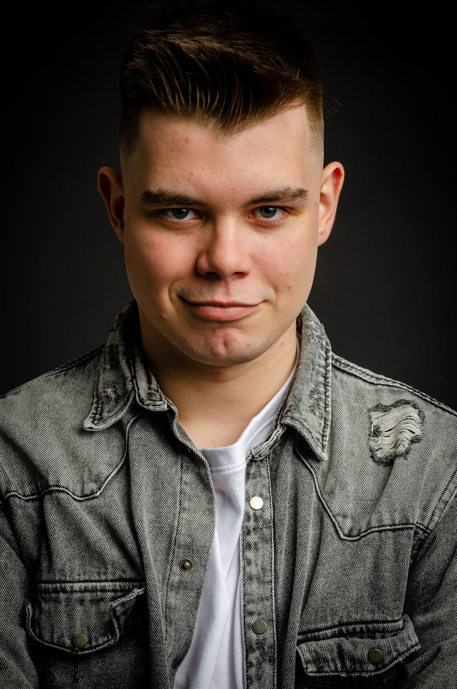

Witaj. Nazywam się Bartosz Tyszko, jestem fotografem sportowym.
Specjalizuję się w uchwyceniu emocji i dynamiki meczów — od pierwszego gwizdka po euforię na trybunach. Pracuję dla klubów, zawodników i redakcji. Dostarczam gotowe materiały prasowe i kompletne galerie web/social.
Co robię?
Reportaż meczowy, portrety, kulisy, social snippets. Krótki czas reakcji, spójny look & feel.
Gdzie działam?
Warszawa i okolice • wyjazdy PL/UE na zlecenie.
